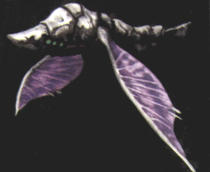

What are Pure Type Monsters? Pure type monsters are a fusion of Ancient Age machines and living organisms. They were created by a long forgotten civilization that once used them for warfare, as living weapons. Their biological genes have been reconstructed and merged with built in weapons. Surrounding their bodies is a hard exoskeleton. This exoskeleton is made of a very hard bone-like material, that can repel energy blasts. These monsters can be found in ancient ruins and Towers. The world has been molded and shaped by the powers of these Towers. When the human population grows too large, the Towers send pure type monsters to kill and bring the human populations under control. The purpose of most pure types is to guard and protect the ruins they are stationed at. Some pure type monsters cant die until they have fulfilled the purpose given to them, so long ago. |
The bone-like armor surrounding pure types makes them almost indestructible and protects against enemy attacks. |
 Pure types are a fusion of machines and living organisms. This flying creature was converted to a machine long ago, in an age long forgotten. |